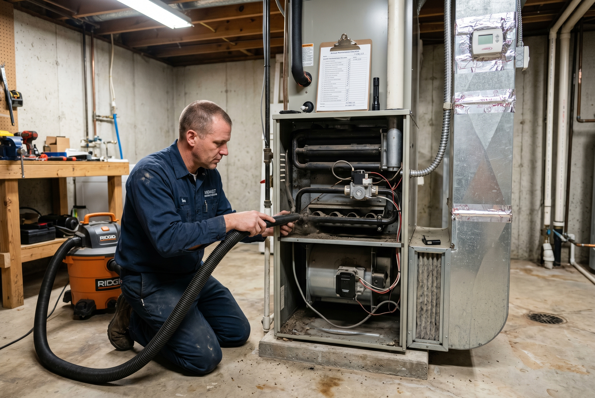
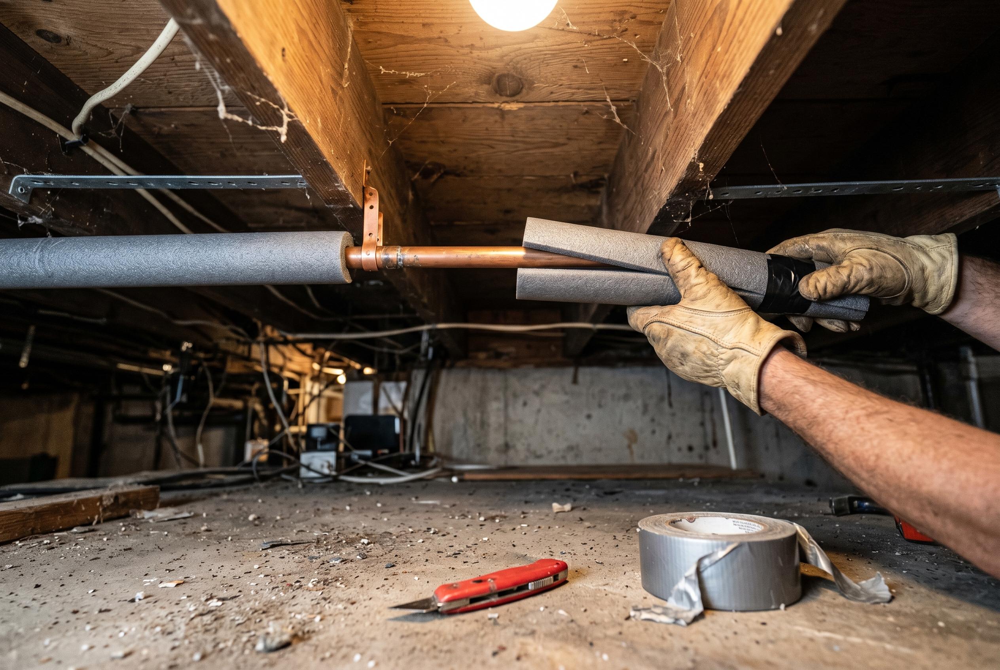

Published October 5, 2026 • By Black Ridge Contracting
October is the right month for winter prep on a Central Iowa home. Temperatures are still comfortable enough for outdoor work, contractors aren't slammed with emergency calls yet, and there's enough lead time to fix anything that turns up during the walkthrough. Wait until November and you're working in cold, paying winter rates, and risking the first hard freeze before the work is done.
Here's the checklist we run before winter on our own homes and what we tell our customers to handle.
Roof and Attic
- Walk the perimeter looking up. Check for cupping shingles, missing shingles, dark streaks below the chimney or vents, and visible sag along the ridge.
- Replace pipe boots. The rubber collars around plumbing vents crack from UV after 7 to 12 years. They're a $200 fix that prevents a $3,000 ceiling repair.
- Check attic insulation depth. Iowa code is R-49, which is roughly 16 inches of blown insulation. If you can see joists sticking up, you don't have enough.
- Verify attic ventilation. Soffit vents on intake, ridge or gable vents on exhaust. Blocked ventilation causes ice dams.
- Look for daylight through the deck. Any visible light is a leak.
Gutters and Downspouts
- Clean every gutter. Iowa cottonwoods, maples, and oaks all drop in October. A November cleaning is too late.
- Check pitch. Water should run toward downspouts. If it sits in the gutter, the gutter is either clogged or sagging.
- Check downspout extensions. Should discharge at least 4 feet from the foundation. If it's right next to the house, get an extender for $20.
- Consider gutter guards. If you're tired of cleaning, October is the time to install them. $1,200 to $3,500 depending on home size.

Foundation and Basement
- Check the grading. Soil should slope away from the foundation. If it slopes toward the house, water will pool there and freeze, then thaw, then refreeze. Crack territory.
- Inspect window wells. Clear leaves and debris. Check the covers if you have them.
- Look for new foundation cracks. Existing cracks are usually settled. New cracks are active movement and worth a contractor look.
- Verify the sump pump works. Run a few gallons of water into the pit and confirm it kicks on and discharges.
Pipes and Plumbing
- Disconnect garden hoses. Drain them, store inside, and shut off the interior valve for outdoor spigots.
- Insulate exposed pipes. Anything in attics, crawl spaces, or running through exterior walls.
- Know where your main shutoff is. When a pipe bursts in February at 2 AM, you don't want to be searching.
- Drip faucets during deep cold. A pencil-width stream during sub-zero nights keeps water moving and prevents freeze.

HVAC
- Schedule furnace service. $100 to $200 in October beats emergency call rates in January.
- Replace the filter. Cheapest preventative you can do. Replace again at the holidays.
- Check the thermostat. If it's old enough to be mercury-based, replace with a programmable.
- Test carbon monoxide detectors. Replace batteries. Detectors over 7 years old should be replaced entirely.
Doors, Windows, and Caulking
- Caulk gaps around windows and doors. Especially where the trim meets the siding. A $5 tube of caulk plus an afternoon prevents drafts.
- Replace weatherstripping on exterior doors if you can see daylight at the edges.
- Add storm windows on older homes if you don't have them. Even temporary plastic film helps.
Exterior Wood and Siding
- Caulk any cracks in the siding or trim. Water gets in, freezes, expands, and creates bigger cracks. October caulking is the cheapest prevention.
- Touch up any peeling paint. Exposed wood absorbs moisture and rots faster.
- Check the chimney. Look for mortar deterioration, cap condition, flashing. Crown cracks let water in and freeze-thaw destroys the chimney from the top down.
Driveway and Walkways
- Seal cracks in concrete. Water in concrete cracks plus freeze equals bigger cracks. $30 tube of concrete crack filler prevents thousands in driveway replacement.
- Stock salt or ice melt. Don't wait for the first storm. Buy ahead.
- Check exterior step railings. Loose railings on icy steps are a real liability.
What to Have a Contractor Look At
Some things you can do yourself, some you can't. Call a contractor if you find:
- Visible roof damage or daylight through the deck
- Active water in the basement
- Foundation cracks wider than 1/4 inch
- Chimney mortar deterioration or crown cracks
- Major siding rot or damage
We do free walkthroughs across Central Iowa to flag anything that needs attention before winter. See our services or call (515) 219-4654. Easier to catch in October than in January.
Frequently Asked Questions
Late September through mid-October. Most freeze risk hits by early November and full winter by mid-November.
Gutter cleaning. Clogged gutters cause ice dams and interior damage. A $200 cleaning prevents a $5,000+ repair.
Insulate exposed pipes, disconnect hoses, keep cabinet doors open in deep cold, maintain interior temp above 55 degrees.
Yes. $100 to $200 in October beats emergency rates in January.